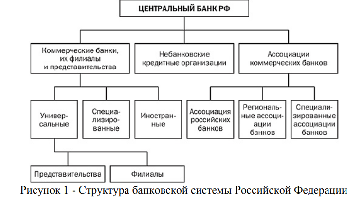
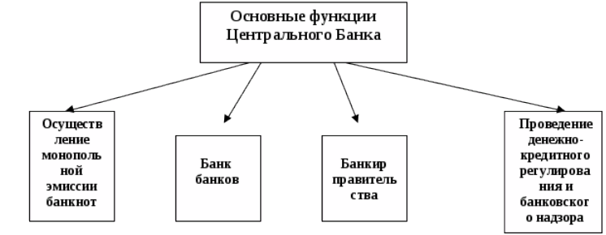
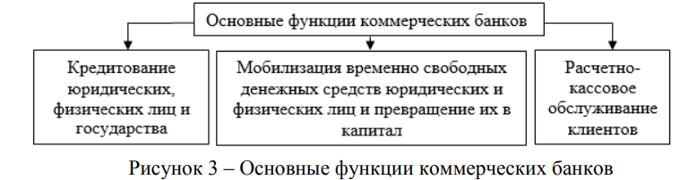
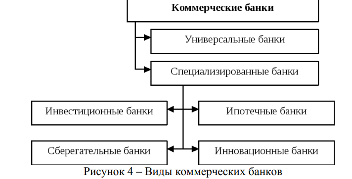
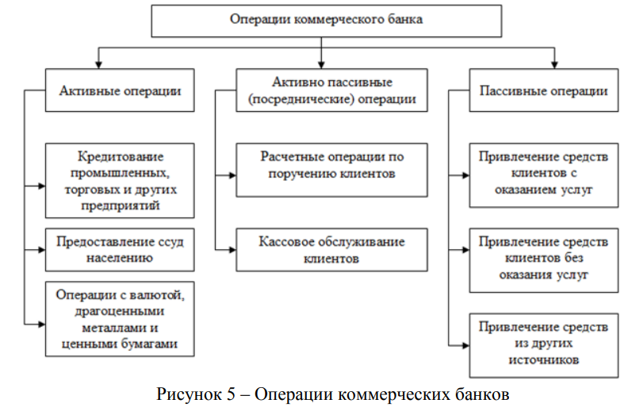

<!doctype html>
<html class="no-js" lang="en" data-content_root="../">
  <head><meta charset="utf-8"/>
    <meta name="viewport" content="width=device-width,initial-scale=1"/>
    <meta name="color-scheme" content="light dark"><meta name="viewport" content="width=device-width, initial-scale=1" />
<link rel="index" title="Index" href="../genindex.html" /><link rel="search" title="Search" href="../search.html" /><link rel="next" title="Глава 1 - Современная банковская система Российской Федерации" href="chapter-1.html" /><link rel="prev" title="Đề cương môn học MEPhI" href="../intro.html" />

    <!-- Generated with Sphinx 7.4.7 and Furo 2024.08.06 -->
        <title>Банковская система РФ - Đây là tiêu đề</title>
      <link rel="stylesheet" type="text/css" href="../_static/pygments.css?v=80d5e7a1" />
    <link rel="stylesheet" type="text/css" href="../_static/styles/furo.css?v=354aac6f" />
    <link rel="stylesheet" type="text/css" href="../_static/togglebutton.css?v=13237357" />
    <link rel="stylesheet" type="text/css" href="../_static/copybutton.css?v=76b2166b" />
    <link rel="stylesheet" type="text/css" href="../_static/mystnb.4510f1fc1dee50b3e5859aac5469c37c29e427902b24a333a5f9fcb2f0b3ac41.css" />
    <link rel="stylesheet" type="text/css" href="../_static/sphinx-thebe.css?v=4fa983c6" />
    <link rel="stylesheet" type="text/css" href="../_static/sphinx-design.min.css?v=95c83b7e" />
    <link rel="stylesheet" type="text/css" href="../_static/styles/furo-extensions.css?v=302659d7" />
    <link rel="stylesheet" type="text/css" href="../_static/myfile.css?v=d8e435fa" />
    
    


<style>
  body {
    --color-code-background: #f8f8f8;
  --color-code-foreground: black;
  
  }
  @media not print {
    body[data-theme="dark"] {
      --color-code-background: #202020;
  --color-code-foreground: #d0d0d0;
  
    }
    @media (prefers-color-scheme: dark) {
      body:not([data-theme="light"]) {
        --color-code-background: #202020;
  --color-code-foreground: #d0d0d0;
  
      }
    }
  }
</style></head>
  <body>
    
    <script>
      document.body.dataset.theme = localStorage.getItem("theme") || "auto";
    </script>
    

<svg xmlns="http://www.w3.org/2000/svg" style="display: none;">
  <symbol id="svg-toc" viewBox="0 0 24 24">
    <title>Contents</title>
    <svg stroke="currentColor" fill="currentColor" stroke-width="0" viewBox="0 0 1024 1024">
      <path d="M408 442h480c4.4 0 8-3.6 8-8v-56c0-4.4-3.6-8-8-8H408c-4.4 0-8 3.6-8 8v56c0 4.4 3.6 8 8 8zm-8 204c0 4.4 3.6 8 8 8h480c4.4 0 8-3.6 8-8v-56c0-4.4-3.6-8-8-8H408c-4.4 0-8 3.6-8 8v56zm504-486H120c-4.4 0-8 3.6-8 8v56c0 4.4 3.6 8 8 8h784c4.4 0 8-3.6 8-8v-56c0-4.4-3.6-8-8-8zm0 632H120c-4.4 0-8 3.6-8 8v56c0 4.4 3.6 8 8 8h784c4.4 0 8-3.6 8-8v-56c0-4.4-3.6-8-8-8zM115.4 518.9L271.7 642c5.8 4.6 14.4.5 14.4-6.9V388.9c0-7.4-8.5-11.5-14.4-6.9L115.4 505.1a8.74 8.74 0 0 0 0 13.8z"/>
    </svg>
  </symbol>
  <symbol id="svg-menu" viewBox="0 0 24 24">
    <title>Menu</title>
    <svg xmlns="http://www.w3.org/2000/svg" viewBox="0 0 24 24" fill="none" stroke="currentColor"
      stroke-width="2" stroke-linecap="round" stroke-linejoin="round" class="feather-menu">
      <line x1="3" y1="12" x2="21" y2="12"></line>
      <line x1="3" y1="6" x2="21" y2="6"></line>
      <line x1="3" y1="18" x2="21" y2="18"></line>
    </svg>
  </symbol>
  <symbol id="svg-arrow-right" viewBox="0 0 24 24">
    <title>Expand</title>
    <svg xmlns="http://www.w3.org/2000/svg" viewBox="0 0 24 24" fill="none" stroke="currentColor"
      stroke-width="2" stroke-linecap="round" stroke-linejoin="round" class="feather-chevron-right">
      <polyline points="9 18 15 12 9 6"></polyline>
    </svg>
  </symbol>
  <symbol id="svg-sun" viewBox="0 0 24 24">
    <title>Light mode</title>
    <svg xmlns="http://www.w3.org/2000/svg" viewBox="0 0 24 24" fill="none" stroke="currentColor"
      stroke-width="1" stroke-linecap="round" stroke-linejoin="round" class="feather-sun">
      <circle cx="12" cy="12" r="5"></circle>
      <line x1="12" y1="1" x2="12" y2="3"></line>
      <line x1="12" y1="21" x2="12" y2="23"></line>
      <line x1="4.22" y1="4.22" x2="5.64" y2="5.64"></line>
      <line x1="18.36" y1="18.36" x2="19.78" y2="19.78"></line>
      <line x1="1" y1="12" x2="3" y2="12"></line>
      <line x1="21" y1="12" x2="23" y2="12"></line>
      <line x1="4.22" y1="19.78" x2="5.64" y2="18.36"></line>
      <line x1="18.36" y1="5.64" x2="19.78" y2="4.22"></line>
    </svg>
  </symbol>
  <symbol id="svg-moon" viewBox="0 0 24 24">
    <title>Dark mode</title>
    <svg xmlns="http://www.w3.org/2000/svg" viewBox="0 0 24 24" fill="none" stroke="currentColor"
      stroke-width="1" stroke-linecap="round" stroke-linejoin="round" class="icon-tabler-moon">
      <path stroke="none" d="M0 0h24v24H0z" fill="none" />
      <path d="M12 3c.132 0 .263 0 .393 0a7.5 7.5 0 0 0 7.92 12.446a9 9 0 1 1 -8.313 -12.454z" />
    </svg>
  </symbol>
  <symbol id="svg-sun-with-moon" viewBox="0 0 24 24">
    <title>Auto light/dark, in light mode</title>
    <svg xmlns="http://www.w3.org/2000/svg" viewBox="0 0 24 24" fill="none" stroke="currentColor"
      stroke-width="1" stroke-linecap="round" stroke-linejoin="round"
      class="icon-custom-derived-from-feather-sun-and-tabler-moon">
      <path style="opacity: 50%" d="M 5.411 14.504 C 5.471 14.504 5.532 14.504 5.591 14.504 C 3.639 16.319 4.383 19.569 6.931 20.352 C 7.693 20.586 8.512 20.551 9.25 20.252 C 8.023 23.207 4.056 23.725 2.11 21.184 C 0.166 18.642 1.702 14.949 4.874 14.536 C 5.051 14.512 5.231 14.5 5.411 14.5 L 5.411 14.504 Z"/>
      <line x1="14.5" y1="3.25" x2="14.5" y2="1.25"/>
      <line x1="14.5" y1="15.85" x2="14.5" y2="17.85"/>
      <line x1="10.044" y1="5.094" x2="8.63" y2="3.68"/>
      <line x1="19" y1="14.05" x2="20.414" y2="15.464"/>
      <line x1="8.2" y1="9.55" x2="6.2" y2="9.55"/>
      <line x1="20.8" y1="9.55" x2="22.8" y2="9.55"/>
      <line x1="10.044" y1="14.006" x2="8.63" y2="15.42"/>
      <line x1="19" y1="5.05" x2="20.414" y2="3.636"/>
      <circle cx="14.5" cy="9.55" r="3.6"/>
    </svg>
  </symbol>
  <symbol id="svg-moon-with-sun" viewBox="0 0 24 24">
    <title>Auto light/dark, in dark mode</title>
    <svg xmlns="http://www.w3.org/2000/svg" viewBox="0 0 24 24" fill="none" stroke="currentColor"
      stroke-width="1" stroke-linecap="round" stroke-linejoin="round"
      class="icon-custom-derived-from-feather-sun-and-tabler-moon">
      <path d="M 8.282 7.007 C 8.385 7.007 8.494 7.007 8.595 7.007 C 5.18 10.184 6.481 15.869 10.942 17.24 C 12.275 17.648 13.706 17.589 15 17.066 C 12.851 22.236 5.91 23.143 2.505 18.696 C -0.897 14.249 1.791 7.786 7.342 7.063 C 7.652 7.021 7.965 7 8.282 7 L 8.282 7.007 Z"/>
      <line style="opacity: 50%" x1="18" y1="3.705" x2="18" y2="2.5"/>
      <line style="opacity: 50%" x1="18" y1="11.295" x2="18" y2="12.5"/>
      <line style="opacity: 50%" x1="15.316" y1="4.816" x2="14.464" y2="3.964"/>
      <line style="opacity: 50%" x1="20.711" y1="10.212" x2="21.563" y2="11.063"/>
      <line style="opacity: 50%" x1="14.205" y1="7.5" x2="13.001" y2="7.5"/>
      <line style="opacity: 50%" x1="21.795" y1="7.5" x2="23" y2="7.5"/>
      <line style="opacity: 50%" x1="15.316" y1="10.184" x2="14.464" y2="11.036"/>
      <line style="opacity: 50%" x1="20.711" y1="4.789" x2="21.563" y2="3.937"/>
      <circle style="opacity: 50%" cx="18" cy="7.5" r="2.169"/>
    </svg>
  </symbol>
  <symbol id="svg-pencil" viewBox="0 0 24 24">
    <svg xmlns="http://www.w3.org/2000/svg" viewBox="0 0 24 24" fill="none" stroke="currentColor"
      stroke-width="1" stroke-linecap="round" stroke-linejoin="round" class="icon-tabler-pencil-code">
      <path d="M4 20h4l10.5 -10.5a2.828 2.828 0 1 0 -4 -4l-10.5 10.5v4" />
      <path d="M13.5 6.5l4 4" />
      <path d="M20 21l2 -2l-2 -2" />
      <path d="M17 17l-2 2l2 2" />
    </svg>
  </symbol>
  <symbol id="svg-eye" viewBox="0 0 24 24">
    <svg xmlns="http://www.w3.org/2000/svg" viewBox="0 0 24 24" fill="none" stroke="currentColor"
      stroke-width="1" stroke-linecap="round" stroke-linejoin="round" class="icon-tabler-eye-code">
      <path stroke="none" d="M0 0h24v24H0z" fill="none" />
      <path d="M10 12a2 2 0 1 0 4 0a2 2 0 0 0 -4 0" />
      <path
        d="M11.11 17.958c-3.209 -.307 -5.91 -2.293 -8.11 -5.958c2.4 -4 5.4 -6 9 -6c3.6 0 6.6 2 9 6c-.21 .352 -.427 .688 -.647 1.008" />
      <path d="M20 21l2 -2l-2 -2" />
      <path d="M17 17l-2 2l2 2" />
    </svg>
  </symbol>
</svg>

<input type="checkbox" class="sidebar-toggle" name="__navigation" id="__navigation">
<input type="checkbox" class="sidebar-toggle" name="__toc" id="__toc">
<label class="overlay sidebar-overlay" for="__navigation">
  <div class="visually-hidden">Hide navigation sidebar</div>
</label>
<label class="overlay toc-overlay" for="__toc">
  <div class="visually-hidden">Hide table of contents sidebar</div>
</label>

<a class="skip-to-content muted-link" href="#furo-main-content">Skip to content</a>


<div class="page">
  <header class="mobile-header">
    <div class="header-left">
      <label class="nav-overlay-icon" for="__navigation">
        <div class="visually-hidden">Toggle site navigation sidebar</div>
        <i class="icon"><svg><use href="#svg-menu"></use></svg></i>
      </label>
    </div>
    <div class="header-center">
      <a href="../intro.html"><div class="brand">Đây là tiêu đề</div></a>
    </div>
    <div class="header-right">
      <div class="theme-toggle-container theme-toggle-header">
        <button class="theme-toggle">
          <div class="visually-hidden">Toggle Light / Dark / Auto color theme</div>
          <svg class="theme-icon-when-auto-light"><use href="#svg-sun-with-moon"></use></svg>
          <svg class="theme-icon-when-auto-dark"><use href="#svg-moon-with-sun"></use></svg>
          <svg class="theme-icon-when-dark"><use href="#svg-moon"></use></svg>
          <svg class="theme-icon-when-light"><use href="#svg-sun"></use></svg>
        </button>
      </div>
      <label class="toc-overlay-icon toc-header-icon" for="__toc">
        <div class="visually-hidden">Toggle table of contents sidebar</div>
        <i class="icon"><svg><use href="#svg-toc"></use></svg></i>
      </label>
    </div>
  </header>
  <aside class="sidebar-drawer">
    <div class="sidebar-container">
      
      <div class="sidebar-sticky"><a class="sidebar-brand" href="../intro.html">
  
  <div class="sidebar-logo-container">
    
  </div>
  
  <span class="sidebar-brand-text">Đây là tiêu đề</span>
  
</a><form class="sidebar-search-container" method="get" action="../search.html" role="search">
  <input class="sidebar-search" placeholder="Search" name="q" aria-label="Search">
  <input type="hidden" name="check_keywords" value="yes">
  <input type="hidden" name="area" value="default">
</form>
<div id="searchbox"></div><div class="sidebar-scroll"><div class="sidebar-tree">
  <p class="caption" role="heading"><span class="caption-text">БСРФ</span></p>
<ul class="current">
<li class="toctree-l1 current current-page"><a class="current reference internal" href="#">Банковская система РФ</a></li>
<li class="toctree-l1 has-children"><a class="reference internal" href="chapter-1.html">Глава 1 - Современная банковская система Российской Федерации</a><input class="toctree-checkbox" id="toctree-checkbox-1" name="toctree-checkbox-1" role="switch" type="checkbox"/><label for="toctree-checkbox-1"><div class="visually-hidden">Toggle navigation of Глава 1 - Современная банковская система Российской Федерации</div><i class="icon"><svg><use href="#svg-arrow-right"></use></svg></i></label><ul>
<li class="toctree-l2"><a class="reference internal" href="section-1.html">Законодательный и доктринальные подходы к определению структуры российской банковской системы</a></li>
<li class="toctree-l2"><a class="reference internal" href="section-2.html">Представительства иностранных банков</a></li>
<li class="toctree-l2"><a class="reference internal" href="section-3.html">Банковские группы и банковские холдинги</a></li>
<li class="toctree-l2"><a class="reference internal" href="section-4.html">Ассоциации и союзы кредитных организаций</a></li>
<li class="toctree-l2"><a class="reference internal" href="section-5.html">Банк развития</a></li>
<li class="toctree-l2"><a class="reference internal" href="section-6.html">Кредитные потребительские кооперативы</a></li>
<li class="toctree-l2"><a class="reference internal" href="section-7.html">Ломбарды</a></li>
<li class="toctree-l2"><a class="reference internal" href="section-8.html">Микрофинансовые организации</a></li>
<li class="toctree-l2"><a class="reference internal" href="section-9.html">Кредитные брокеры</a></li>
<li class="toctree-l2"><a class="reference internal" href="section-10.html">Коллекторские агентства</a></li>
<li class="toctree-l2"><a class="reference internal" href="section-11.html">Платежные агенты и банковские платежные агенты</a></li>
<li class="toctree-l2"><a class="reference internal" href="section-12.html">Финансовый омбудсмен</a></li>
</ul>
</li>
</ul>
<p class="caption" role="heading"><span class="caption-text">Методология и организация научных исследований</span></p>
<ul>
<li class="toctree-l1"><a class="reference internal" href="../%D0%BC%D0%B5%D1%82%D0%BE%D0%B4%D0%BE%D0%BB%D0%BE%D0%B3%D0%B8%D1%8F-%D0%B8-%D0%BE%D1%80%D0%B3%D0%B0%D0%BD%D0%B8%D0%B7%D0%B0%D1%86%D0%B8%D1%8F-%D0%BD%D0%B0%D1%83%D1%87%D0%BD%D1%8B%D1%85-%D0%B8%D1%81%D1%81%D0%BB%D0%B5%D0%B4%D0%BE%D0%B2%D0%B0%D0%BD%D0%B8%D0%B9/README.html">Методология и организация научных исследований</a></li>
</ul>
<p class="caption" role="heading"><span class="caption-text">ИРФМ</span></p>
<ul>
<li class="toctree-l1"><a class="reference internal" href="../infores-finmon/lectures.html">1.5. Технологии информирования</a></li>
<li class="toctree-l1"><a class="reference internal" href="../infores-finmon/lecture-intro.html">Информация. Свойства информации</a></li>
<li class="toctree-l1"><a class="reference internal" href="../infores-finmon/lecture-1.html">Введение в информационные системы и технологии</a></li>
<li class="toctree-l1"><a class="reference internal" href="../infores-finmon/lecture-5IS.html">Глава 5ИС. Лингвистическое обеспечение ИС.</a></li>
<li class="toctree-l1"><a class="reference internal" href="../infores-finmon/lecture-5.html">Глава 5. Методы автоматической обработки и лексического анализа документальной информации</a></li>
<li class="toctree-l1"><a class="reference internal" href="../infores-finmon/lecture-6.html">Глава 6. Поисковые задачи, средства и технологии информационного поиска</a></li>
</ul>
<p class="caption" role="heading"><span class="caption-text">Актуальные подходы к обеспечению безопасности информации</span></p>
<ul>
<li class="toctree-l1"><a class="reference internal" href="../infosec/lectures.html">Актуальные подходы к обеспечению безопасности информации</a></li>
</ul>
<p class="caption" role="heading"><span class="caption-text">Национальная система по ПОД/ФТ</span></p>
<ul>
<li class="toctree-l1 has-children"><a class="reference internal" href="../CML-TF/README.html">Национальная система по противодействию легализации преступных доходов и финансированию терроризма</a><input class="toctree-checkbox" id="toctree-checkbox-2" name="toctree-checkbox-2" role="switch" type="checkbox"/><label for="toctree-checkbox-2"><div class="visually-hidden">Toggle navigation of Национальная система по противодействию легализации преступных доходов и финансированию терроризма</div><i class="icon"><svg><use href="#svg-arrow-right"></use></svg></i></label><ul>
<li class="toctree-l2"><a class="reference internal" href="../CML-TF/lecture-1.html">Лекция 1. Понятие «отмывание денег». Макроэкономические последствия отмывания денег</a></li>
<li class="toctree-l2"><a class="reference internal" href="../CML-TF/lecture-2.html">Лекция 2. Экономические и правовые основы международной системы противодействия легализации (отмывания) преступных доходов и финансирования терроризма</a></li>
<li class="toctree-l2"><a class="reference internal" href="../CML-TF/lecture-3.html">Лекция 3. Международные стандарты ПОД/ФТ/ФРОМУ</a></li>
<li class="toctree-l2"><a class="reference internal" href="../CML-TF/lecture-4.html">Лекция 4. Международные стандарты ПОД/ФТ/ФРОМУ. Часть 2</a></li>
<li class="toctree-l2"><a class="reference internal" href="../CML-TF/lecture-5.html">Лекция 5. Система противодействия финансированию терроризма</a></li>
<li class="toctree-l2"><a class="reference internal" href="../CML-TF/lecture-6.html">Лекция 6. Основные этапы становления национальной системы ПОД/ФТ</a></li>
</ul>
</li>
</ul>
<p class="caption" role="heading"><span class="caption-text">Специальные технологии БД и ИС</span></p>
<ul>
<li class="toctree-l1"><a class="reference internal" href="../database/README.html">Специальные технологии баз данных и информационных систем</a></li>
<li class="toctree-l1"><a class="reference internal" href="../database/lecture-1.html">Лекция 1</a></li>
<li class="toctree-l1"><a class="reference internal" href="../database/lecture-2.html">Лекция 2 - Введение в Hadoop</a></li>
<li class="toctree-l1"><a class="reference internal" href="../database/lecture-3.html">Лекция 3. Apache Spark: Часть 1</a></li>
</ul>
<p class="caption" role="heading"><span class="caption-text">Руский язык</span></p>
<ul>
<li class="toctree-l1"><a class="reference internal" href="../russian/README.html">Русский язык</a></li>
</ul>

</div>
</div>

      </div>
      
    </div>
  </aside>
  <div class="main">
    <div class="content">
      <div class="article-container">
        <a href="#" class="back-to-top muted-link">
          <svg xmlns="http://www.w3.org/2000/svg" viewBox="0 0 24 24">
            <path d="M13 20h-2V8l-5.5 5.5-1.42-1.42L12 4.16l7.92 7.92-1.42 1.42L13 8v12z"></path>
          </svg>
          <span>Back to top</span>
        </a>
        <div class="content-icon-container">
          <div class="view-this-page">
  <a class="muted-link" href="https://github.com/executablebooks/jupyter-book/blob/main/banking-system-russia/README.md?plain=true" title="View this page">
    <svg><use href="#svg-eye"></use></svg>
    <span class="visually-hidden">View this page</span>
  </a>
</div><div class="edit-this-page">
  <a class="muted-link" href="https://github.com/executablebooks/jupyter-book/edit/main/banking-system-russia/README.md" title="Edit this page">
    <svg><use href="#svg-pencil"></use></svg>
    <span class="visually-hidden">Edit this page</span>
  </a>
</div><div class="theme-toggle-container theme-toggle-content">
            <button class="theme-toggle">
              <div class="visually-hidden">Toggle Light / Dark / Auto color theme</div>
              <svg class="theme-icon-when-auto-light"><use href="#svg-sun-with-moon"></use></svg>
              <svg class="theme-icon-when-auto-dark"><use href="#svg-moon-with-sun"></use></svg>
              <svg class="theme-icon-when-dark"><use href="#svg-moon"></use></svg>
              <svg class="theme-icon-when-light"><use href="#svg-sun"></use></svg>
            </button>
          </div>
          <label class="toc-overlay-icon toc-content-icon" for="__toc">
            <div class="visually-hidden">Toggle table of contents sidebar</div>
            <i class="icon"><svg><use href="#svg-toc"></use></svg></i>
          </label>
        </div>
        <article role="main" id="furo-main-content">
          <section class="tex2jax_ignore mathjax_ignore" id="id1">
<h1>Банковская система РФ<a class="headerlink" href="#id1" title="Link to this heading">¶</a></h1>
<p>Giảng viên: Толстой Александр Иванович</p>
<section id="id2">
<h2>Нормативное регулирование<a class="headerlink" href="#id2" title="Link to this heading">¶</a></h2>
<div class="admonition-n-395-1 admonition">
<p class="admonition-title">Федеральный закон от 02.12.1990 N 395-1 “О банках и банковской деятельности”</p>
<p><strong>Статья 2. Банковская система Российской Федерации и правовое регулирование банковской деятельности</strong></p>
<p>Банковская система Российской Федерации включает в себя Банк России, кредитные организации, а также представительства иностранных банков.</p>
<p>Правовое регулирование банковской деятельности осуществляется Конституцией Российской Федерации, настоящим Федеральным законом, Федеральным законом “О Центральном банке Российской Федерации (Банке России)”, другими федеральными законами, нормативными актами Банка России.</p>
</div>
<p>Банковская система Российской Федерации — это совокупность взаимосвязанных элементов, которая включает Центральный банк кредитные организации, состоящие из коммерческих банков и других кредитно-расчетных учреждений, иногда объединенных в рамках холдингов, а также банковскую инфраструктуру и банковское законодательство.</p>
<p>Российская банковская система имеет двухуровневую структуру.</p>
<ul class="simple">
<li><p>1 уровень представлен Центральным банком РФ.</p></li>
<li><p>2 уровень включает банки и небанковские кредитные организации, а также филиалы и представительства иностранных банков.</p></li>
</ul>
<p>Банковская деятельность является лицензируемым видом деятельности.</p>
<p></p>
<ol class="arabic simple">
<li><p>Банк России (Центральный банк Российской Федерации – ЦБ РФ);</p></li>
<li><p>коммерческие банки:</p>
<ul class="simple">
<li><p>а) универсальные – выполняют любые операции;</p></li>
<li><p>б) иностранные;</p></li>
<li><p>в) специализированные;</p></li>
</ul>
</li>
<li><p>небанковские кредитные организации (фонды, инвестиционные компании);</p></li>
<li><p>банковские ассоциации (это некоммерческие общественные организации, членами которых являются коммерческие банки, и создаются они для представления их интересов в органах законодательной, исполнительной и судебной власти).</p></li>
</ol>
<p><strong>Кредитная организация</strong> - это юридическое лицо, которое для извлечения прибыли как основной цели своей деятельности на основании специального разрешения (лицензии) Центрального банка РФ (Банка России) имеет право осуществлять банковские операции, предусмотренные Законом о банках.</p>
<p><strong>Банк</strong> – это специализированная кредитная организация, созданная для привлечения денежных средств и размещения их от своего имени на условиях срочности, платности и возвратности.</p>
<p><strong>Небанковская кредитная организация</strong> – кредитная организация, имеющая право осуществлять отдельные банковские операции (инвестиционные и страховые компании, ломбарды, инкассации и др.)</p>
<p><strong>Банковская инфраструктура</strong> - совокупность институтов, формирующих необходимые условия для осуществления банковской деятельности и содействующих созданию и доведению банковских услуг до их потребителей. К ним можно отнести:</p>
<ul class="simple">
<li><p>систему страхования вкладов, обеспечивающую гарантирование сохранности вкладов граждан в банках в рамках установленных законодательством норм, которое осуществляется специально созданным государством Агентством по страхованию вкладов (АС В);</p></li>
<li><p>независимые платежные системы, оказывающие содействие в осуществлении расчетов между организациями и банками, например, SWIFT, и платежных операций по пластиковым картам, например, VISA, MasterCard, American Express;</p></li>
<li><p>аудиторские организации, обеспечивающие независимую проверку деятельности как коммерческих банков, так и Центрального банка РФ и подтверждение их финансовой отчетности;</p></li>
<li><p>организации - поставщики информационно-технологических решений, разрабатывающие и предоставляющие банкам современные банковские технологии, направленные на автоматизацию их бизнес-процессов и достижение высокого уровня безопасности.</p></li>
</ul>
<p><strong>Источниками банковского законодательства РФ</strong> являются: Конституция РФ; нормы международного банковского права и международные договоры РФ; решения Конституционного Суда РФ; Гражданский кодекс (ГК) РФ; Федеральный закон «О банках и банковской деятельности»; Федеральный закон «О Центральном банке Российской Федерации (Банке России)»; подзаконные нормативные правовые акты (инструкции, положения, циркуляры и т.п.).</p>
<p>Кроме того, в современной банковской системе банки классифицируются:</p>
<ul class="simple">
<li><p>на крупные, средние и малые — по масштабам деятельности и объему собственного капитала;</p></li>
<li><p>на специализированные и универсальные — по характеру осуществляемых операций;</p></li>
<li><p>на международные, всероссийские, межрегиональные и региональные — по сфере обслуживания;</p></li>
<li><p>на банки с иностранным капиталом и без иностранного капитала;</p></li>
<li><p>на многофилиальные и бесфилиальные.</p></li>
</ul>
<p>Отдельную категорию составляют системно значимые банки — самые крупные организации по количеству клиентов и объему активов, играющие «финансообразующую» роль в банковской системе.</p>
<p>Банковская система России на сегодня включает одиннадцать системно значимых компаний:</p>
<ul class="simple">
<li><p>четыре государственных — Сбербанк России, ВТБ, Газпромбанк, Россельхозбанк;</p></li>
<li><p>четыре частных без иностранного капитала — Альфа-банк, Московский Кредитный Банк (МКБ), ФК «Банк Открытие», Промсвязьбанк;</p></li>
<li><p>три частных с иностранным капиталом — Райффайзенбанк, ЮниКредит Банк, Росбанк.</p></li>
</ul>
<p>Банковская система функционирует не изолированно, а во взаимосвязи. Эта взаимосвязь проявляется через осуществление межбанковских расчетов, когда банк по поручению клиентов осуществляет платежи через:</p>
<ol class="arabic simple">
<li><p>расчетную сеть Банка России;</p></li>
<li><p>банки-корреспонденты;</p></li>
<li><p>банки, уполномоченные вести счета определенных видов (специализированные банки);</p></li>
<li><p>клиринговые центры (небанковские кредитные организации, осуществляющие расчетные платежи).</p></li>
</ol>
<div class="important admonition">
<p class="admonition-title">Основные свойства банковской системы</p>
<ol class="arabic simple">
<li><p>иерархичность построения;</p></li>
<li><p>наличие отношений и связей;</p></li>
<li><p>упорядоченность отношений и связей;</p></li>
<li><p>наличие процессов управления;</p></li>
<li><p>взаимодействие со средой.</p></li>
</ol>
</div>
<p>На развитие банковской системы влияют внешние и внутренние факторы.</p>
<p><strong>Внешние факторы</strong> – это факторы среды: экономические, политические, правовые, социальные, форсмажорные.</p>
<ul class="simple">
<li><p><strong>Экономические факторы</strong> – исполнение федерального бюджета характер кредитно денежной политики, система налогообложения результаты экономических реформ. В случае кризисов происходит ухудшение деятельности банков – снижаются их надежность
и ликвидность.</p></li>
<li><p><strong>Политические факторы</strong> – решения органов власти и управления которые влияют на решения, принимаемые ЦБ РФ, кредитными организациями.</p></li>
<li><p><strong>Правовые факторы</strong> – устойчивое законодательство, его консервативность создают предпосылки правового регулирования. Законодательство влияет на правила банковских операций или сделок, разрешая или запрещая их.</p></li>
<li><p><strong>Социальные факторы</strong> – уверенность населения в правильности проводимых экономических преобразований, стабильности законодательства.</p></li>
</ul>
<p><strong>Внутренние факторы</strong> – это совокупность факторов, которые формируются самой банковской системой и субъектами.</p>
<p>Существует ряд сложностей развития банковской системы:</p>
<ol class="arabic simple">
<li><p>недостаточно квалифицированные кадры;</p></li>
<li><p>недостаточно квалифицированное управление банковскими рисками;</p></li>
<li><p>недокапитализация банковской системы (нехватка средств);</p></li>
<li><p>увеличение спекулятивных операций на финансовом рынке в ущерб работе с реальным сектором.</p></li>
</ol>
<p>В систему ЦБ РФ входят: <em>центральный аппарат</em>, <em>территориальные учреждения</em>, <em>расчетно-кассовые центры</em>, <em>вычислительные центры</em>, <em>хранилища</em>, <em>учебные заведения</em>.</p>
<p>Главный банк России был учрежден в 1860 г. на базе учрежденных еще Екатериной II государственных банков.</p>
<div class="important admonition">
<p class="admonition-title">Функции ЦБ РФ</p>
<ol class="arabic simple">
<li><p>эмиссионный банк, за которым закреплена монополия эмиссии (эмиссия – выпуск денежной массы);</p></li>
<li><p>Банк Правительства, который обслуживает исполнение бюджета и управляет государственным долгом;</p></li>
<li><p>Банк банков, т. е. расчетный центр, который ведет счета коммерческих банков, связанных с межбанковскими операциями и хранением резервов;</p></li>
<li><p>кредитор последней инстанции (кредиты для коммерческих банков);</p></li>
<li><p>проводник денежно-кредитной и валютной политики;</p></li>
<li><p>орган надзора за банками и финансовыми рынками.</p></li>
</ol>
</div>
<div class="important admonition">
<p class="admonition-title">Основной источник ресурсов ЦБ РФ</p>
<ol class="arabic simple">
<li><p>деньги в обращении (то, что он напечатал);</p></li>
<li><p>средства коммерческих банков (заемные средства, которые дал банк).</p></li>
</ol>
</div>
<p>Центральный банк Российской Федерации создает свои ресурсы двумя методами:</p>
<ol class="arabic simple">
<li><p>деньги из балансовых хранилищ приходуются на баланс, т. е. перемещаются в оборотные кассы, из них – уходят в обращение;</p></li>
<li><p>ЦБ РФ увеличивает свои кредитные вложения путем выдачи ссуд, повышающих остатки на счетах (депозитах).</p></li>
</ol>
<p>Денежное обращение регулируется ЦБ РФ в процессе осуществления кредитной политики, выражаемой в кредитной экспансии или рестрикции.</p>
<p><strong>Экспансия</strong> – увеличение кредитных ресурсов коммерческих банков, которые, выдавая кредиты, повышают массу денег в обращении.</p>
<p><strong>Рестрикция</strong> – ограничение возможностей коммерческих банков.</p>
<p>Инструментами экспансии и рестрикции являются: официальная учетная ставка ЦБ РФ, некоторые неэкономические меры (неразрешение коммерческим банкам некоторых видов
операций).</p>
<p>Официальная учетная ставка ЦБ РФ – это процент по ссудам, используемым ЦБ РФ при кредитовании коммерческих банков; размер ее зависит от уровня ожидаемой инфляции и в то же время оказывает влияние на инфляцию.</p>
<div class="important admonition">
<p class="admonition-title">Основные меры денежно-кредитного регулирования</p>
<ol class="arabic simple">
<li><p>операции на открытом рынке (банк не только проводит свою денежно-кредитную политику, но и помогает коммерческим банкам поддерживать уровень их ликвидности, т.е. способность выполнять в срок свои обязательства перед клиентом; операции на открытом рынке – это операции купли-продажи ЦБ РФ государственных ценных бумаг);</p></li>
<li><p>рефинансирование банков – предоставление кредита коммерческим банкам через аукционы и ломбардные кредиты (ссуды под залог ценных бумаг);</p></li>
<li><p>валютное регулирование (ЦБ РФ контролирует курс, проводит операции на валютном рынке);</p></li>
<li><p>управление наличной денежной массой (эмиссия денег, организация их обращения и изъятие из обращения);</p></li>
<li><p>резервирование денег коммерческих банков путем депонирования в ЦБ РФ (размер резервных требований по депонированию устанавливается в процентах к общей сумме  денежных средств, привлеченных банком; при закрытии коммерческого банка резерв
возвращается);</p></li>
<li><p>банковский надзор и регулирование (ЦБ РФ следит за соблюдением законодательства, нормативных актов Банка России; главная цель надзора – поддержание стабильности банковской системы, защита интересов вкладчиков и кредиторов).</p></li>
</ol>
</div>
<p>Для всех коммерческих банков установлены обязательные правила:</p>
<ol class="arabic simple">
<li><p>проведение банковских операций;</p></li>
<li><p>ведение бухгалтерского учета;</p></li>
<li><p>составление и предоставление бухгалтерской и статистической отчетности.</p></li>
</ol>
<p>Коммерческие банки действуют на основании лицензии. Банки создаются на основе следующих организационно-правовых форм: акционерное общество и общество с ограниченной ответственностью.</p>
<p>Акционерные банки могут быть закрытого (акции банка могут переходить из рук в руки при согласии большинства акционеров) и открытого типов (акции переходят из рук в руки без согласия акционеров по открытой подписке).</p>
<p>Банк может выполнять два вида операций:</p>
<ol class="arabic simple">
<li><p>активные операции – операции по размещению денежных средств вкладчиков с целью получения прибыли. В качестве такого рода операций могут выделяться кредитные операции, операции с ценными бумагами, кассовые, акцептные, сделки с иностранной валютой, недвижимостью. В результате активных операций банки получают дебетовые проценты, которые выше кредитовых, выплачиваемых по пассивным операциям. Разница между дебетовыми и кредитовыми процентами называется маржой и является одной из важных статей дохода банка;</p></li>
<li><p>пассивные операции – операции по привлечению денежных средств в банк.</p></li>
</ol>
<p>Прекращение деятельности банка происходит путем его реорганизации или ликвидации (добровольной или принудительной)</p>
</section>
<section id="id3">
<h2>Роль ЦБ РФ и его функции<a class="headerlink" href="#id3" title="Link to this heading">¶</a></h2>
<p>Центральный банк Российской Федерации (Банк России) — особый публично-правовой институт России, главный банк первого уровня.</p>
<p>Центральный банк – государственный банк, осуществляющий централизованное кредитование, организующий и контролирующий денежное обращение.</p>
<p>Уставный капитал и иное имущество ЦБ РФ являются федеральной собственностью. Он осуществляет свои расходы за счет собственных доходов, а не финансируется за счет бюджета. При этом получение прибыли не является целью деятельности Банка России (50% прибыли перечисляет в федеральный бюджет, остальную – направляет в резервы и фонды различного назначения).</p>
<p>Основными целями деятельности Банка России являются:</p>
<ul class="simple">
<li><p>защита и обеспечение устойчивости рубля;</p></li>
<li><p>развитие и укрепление банковской системы России;</p></li>
<li><p>обеспечение стабильности и развитие национальной платёжной системы;</p></li>
<li><p>развитие финансового рынка России;</p></li>
<li><p>обеспечение стабильности финансового рынка России.</p></li>
</ul>
<p>ЦБ РФ подотчетен Государственной думе, которая назначает и освобождает Председателя Банка и членов Совета директоров (12 членов на 4 года).</p>
<p>Банк России образует единую централизованную систему с вертикальной структурой, в которую входят центральный аппарат, территориальные учреждения, отделения на местах (не имеют статуса юридического лица).</p>
<p>ЦБ РФ выполняет следующие функции (рис.2):</p>
<p></p>
<ol class="arabic simple">
<li><p>монопольная эмиссия банкнот;</p></li>
<li><p>рефинансирование банков, т.е. кредитование Банком РФ других банков;</p></li>
<li><p>проведение денежно-кредитного регулирования в стране;</p></li>
<li><p>обслуживание Правительства РФ (учет бюджетных средств);</p></li>
<li><p>установление нормативов обязательных резервов для коммерческих банков;</p></li>
<li><p>операции на открытом рынке (ценных бумаг);</p></li>
<li><p>валютное регулирование;</p></li>
<li><p>надзор и контроль кредитных организаций, выдача лицензий на осуществление банковских операций (для банков минимальный уставный капитал – 1 млн.евро).</p></li>
</ol>
</section>
<section id="id4">
<h2>Коммерческие банки, их функции и операции<a class="headerlink" href="#id4" title="Link to this heading">¶</a></h2>
<p><strong>Коммерческий банк</strong> - кредитное учреждение, осуществляющее банковские операции для юридических и физических лиц.</p>
<p>Основная цель их деятельности – получение прибыли, которая образуется из разности процентов, взимаемых с клиентов и выплачиваемых им по банковским операциям, а также за счет комиссионных сборов за оказываемые услуги.</p>
<p>Коммерческими называются все без исключения организации банковской системы страны, оказывающие частным и юридическим лицам банковские услуги. К этим услугам относятся (рис.3):</p>
<ul class="simple">
<li><p>кредитование — предоставление кредитов частным клиентам (ипотечные, автокредиты, потребительские нецелевые займы) и предприятиям, относящимся к реальному сектору экономики;</p></li>
<li><p>операции с драгметаллами;</p></li>
<li><p>валютные операции;</p></li>
<li><p>расчетно-кассовое обслуживание клиентов;</p></li>
<li><p>ведение банковских счетов;</p></li>
<li><p>эмиссия банковских карт — пластиковых и виртуальных;</p></li>
<li><p>инкассация;</p></li>
<li><p>привлечение вкладов и выплата процентов согласно соответствующим договорам;</p></li>
<li><p>осуществление денежных переводов;</p></li>
<li><p>реализация банковских гарантий.</p></li>
</ul>
<p></p>
<p>По характеру деятельности коммерческие банки подразделяют на универсальные и специализированные (рис.4).</p>
<p></p>
<p>В российской банковской системе преобладают универсальные коммерческие банки.</p>
<p>Все операции коммерческого банка можно разделить на три основные группы (рис. 5):</p>
<ol class="arabic simple">
<li><p><strong>пассивные операции</strong> – операции по привлечению средств в банки, формированию ресурсов банка. К ним относятся:</p>
<ul class="simple">
<li><p>прием вкладов и депозитов (до востребования, срочных сберегательных) от юридических и физических лиц;</p></li>
<li><p>открытие и ведение расчетных и иных счетов юридических лиц;</p></li>
<li><p>получение межбанковских кредитов;</p></li>
<li><p>эмиссия инвестиционных ценных бумаг.</p></li>
</ul>
</li>
<li><p><strong>активные операции</strong> – операции по размещению финансовых ресурсов. К ним относятся:</p>
<ul class="simple">
<li><p>кредитование;</p></li>
<li><p>банковские инвестиции;</p></li>
<li><p>приобретение ценных бумаг, учет векселей.</p></li>
</ul>
</li>
</ol>
<p></p>
<ol class="arabic simple" start="3">
<li><p><strong>активно-пассивные операции</strong> – комиссионные, посреднические операции, выполняемые банками по поручению клиентов за определенную плату – комиссию. К ним относятся:</p>
<ul class="simple">
<li><p>расчетно-кассовое обслуживание клиентов;</p></li>
<li><p>посреднические операции с ценными бумагами, иностранной валютой по поручению и за счет клиентов;</p></li>
<li><p>выдача поручительств за третьих лиц, предусматривающих исполнение обязательств в денежной форме;</p></li>
<li><p>траст – доверительное управление активами клиентов по доверенности в течение определенного периода;</p></li>
<li><p>факторинг – приобретение права требования от третьих лиц исполнения обязательств в денежной форме;</p></li>
<li><p>лизинговые операции – долгосрочная аренда техники и оборудования;</p></li>
<li><p>осуществление операций с драгоценными металлами и драгоценными камнями.</p></li>
</ul>
</li>
</ol>
<p>Задания
Правовое положение кредитных организаций. Задачи.
Банк России отозвал у кредитной организации лицензию. Кредитная организация, у которой была отозвана лицензия, не приступила к процедуре ликвидации, и в отношении нее не применялась процедура банкротства. По истечении месяца с момента отзыва у кредитной организации лицензии Банк России обратился в арбитражный суд с иском о ликвидации кредитной организации.</p>
<p>Признает ли суд требования Банка России обоснованными и удовлетворит ли предъявленный иск?</p>
<p>Закон одной из республик РФ о ее участии в уставном капитале кредитной организации предусматривал увеличение доли указанного субъекта РФ до 52,1% по предложению правительства республики без указания вносимого в уставный капитал имущества. Прокурор республики обратился в суд с заявлением о признании данной законодательной нормы противоречащей федеральному законодательству, недействующей и не подлежащей применению с момента принятия. Суд предъявленное заявление прокурора республики удовлетворил.</p>
<p>Чем можно обосновать судебное решение и насколько оно законно?</p>
<p>Требуется дать заключение, может ли банк, уже имеющий имущество в неденежной форме в размере 20% уставного капитала, в случае увеличения уставного капитала увеличить и долю имущества в неденежной форме в уставном капитале?</p>
<p>Допустим ли взнос в уставный капитал банка в виде здания (или его части), если размещение в нем филиала (дополнительного офиса) банка планируется лишь в отдаленной перспективе?</p>
<p>После принятия решения об увеличении уставного капитала банка, созданного в форме ООО, за счет внесения дополнительных вкладов банк проверил финансовое положение участников. Оказалось, что некоторые из них имеют неудовлетворительное финансовое положение и поэтому не могут участвовать в увеличении уставного капитала банка.</p>
<p>Будет ли соответствовать требованиям Федерального закона «Об обществах с ограниченной ответственностью» порядок увеличения уставного капитала банка за счет внесения дополнительных вкладов всеми участниками банка пропорционально размеру своей доли без участия участников с неудовлетворительным финансовым положением?</p>
<p>Кредитная организация обратилась в суд с ходатайством о приостановлении действия решения Банка России о назначении временной администрации как меры по предупреждению банкротства. Суд со ссылкой на ч. 3 ст. 199 АПК, согласно которой по ходатайству заявителя арбитражный суд может приостановить действие оспариваемого акта (решения), предъявленное ходатайство удовлетворил.</p>
<p>Законно ли решение суда?</p>
<p>В период конкурсного производства, открытого в отношении банка, кредитор направил конкурсному управляющему требование о включении в реестр требований должника в размере 1млн долл. США. Однако решением конкурсного управляющего вышеназванное требование кредитора не было включено в реестр требований по тем основаниям, что оно является задолженностью филиала банка, который якобы является самостоятельным юридическим лицом, расположенным за границей, к которому и нужно предъявлять это требование, и, кроме того, в отказе сделаны ссылки и на тот факт, что филиал банка является единственным отделением банка-должника, в отношении которого проводятся независимые действия по банкротству на основании законов страны пребывания — Кипра. Кредитор обратился в арбитражный суд с жалобой на указанные действия конкурсного управляющего.</p>
<p>Какое решение должен вынести арбитражный суд?</p>
<p>Решением арбитражного суда с банка в пользу индивидуального предпринимателя были взысканы 80 тыс. руб. в виде остатка денежных средств на счете, и по указанному делу был выдан исполнительный лист. Предприниматель направил исполнительный лист в операционное управление территориального управления Банка России для исполнения. Исполнительный лист был возвращен заявителю, поскольку в отношении банка-должника было принято решение о ликвидации. Полагая, что действия Банка России по возврату исполнительного листа были неправомерными, предприниматель обратился в арбитражный суд.</p>
<p>Какое решение должен вынести суд?</p>
</section>
</section>

    <script type="text/x-thebe-config">
    {
        requestKernel: true,
        binderOptions: {
            repo: "binder-examples/jupyter-stacks-datascience",
            ref: "master",
        },
        codeMirrorConfig: {
            theme: "abcdef",
            mode: "python"
        },
        kernelOptions: {
            name: "python3",
            path: "./banking-system-russia"
        },
        predefinedOutput: true
    }
    </script>
    <script>kernelName = 'python3'</script>
        </article>
      </div>
      <footer>
        
        <div class="related-pages">
          <a class="next-page" href="chapter-1.html">
              <div class="page-info">
                <div class="context">
                  <span>Next</span>
                </div>
                <div class="title">Глава 1 - Современная банковская система Российской Федерации</div>
              </div>
              <svg class="furo-related-icon"><use href="#svg-arrow-right"></use></svg>
            </a>
          <a class="prev-page" href="../intro.html">
              <svg class="furo-related-icon"><use href="#svg-arrow-right"></use></svg>
              <div class="page-info">
                <div class="context">
                  <span>Previous</span>
                </div>
                
                <div class="title">Home</div>
                
              </div>
            </a>
        </div>
        <div class="bottom-of-page">
          <div class="left-details">
            <div class="copyright">
                Copyright &#169; 2023
            </div>
            Made with <a href="https://www.sphinx-doc.org/">Sphinx</a> and <a class="muted-link" href="https://pradyunsg.me">@pradyunsg</a>'s
            
            <a href="https://github.com/pradyunsg/furo">Furo</a>
            
          </div>
          <div class="right-details">
            
          </div>
        </div>
        
      </footer>
    </div>
    <aside class="toc-drawer">
      
      
      <div class="toc-sticky toc-scroll">
        <div class="toc-title-container">
          <span class="toc-title">
            On this page
          </span>
        </div>
        <div class="toc-tree-container">
          <div class="toc-tree">
            <ul>
<li><a class="reference internal" href="#">Банковская система РФ</a><ul>
<li><a class="reference internal" href="#id2">Нормативное регулирование</a></li>
<li><a class="reference internal" href="#id3">Роль ЦБ РФ и его функции</a></li>
<li><a class="reference internal" href="#id4">Коммерческие банки, их функции и операции</a></li>
</ul>
</li>
</ul>

          </div>
        </div>
      </div>
      
      
    </aside>
  </div>
</div><script src="../_static/documentation_options.js?v=9eb32ce0"></script>
    <script src="../_static/doctools.js?v=9a2dae69"></script>
    <script src="../_static/sphinx_highlight.js?v=dc90522c"></script>
    <script src="../_static/scripts/furo.js?v=5fa4622c"></script>
    <script src="../_static/clipboard.min.js?v=a7894cd8"></script>
    <script src="../_static/copybutton.js?v=f281be69"></script>
    <script src="../_static/scripts/sphinx-book-theme.js"></script>
    <script>let toggleHintShow = 'Click to show';</script>
    <script>let toggleHintHide = 'Click to hide';</script>
    <script>let toggleOpenOnPrint = 'true';</script>
    <script src="../_static/togglebutton.js?v=4a39c7ea"></script>
    <script>var togglebuttonSelector = '.toggle, .admonition.dropdown';</script>
    <script src="../_static/design-tabs.js?v=f930bc37"></script>
    <script>const THEBE_JS_URL = "https://unpkg.com/thebe@0.8.2/lib/index.js"; const thebe_selector = ".thebe,.cell"; const thebe_selector_input = "pre"; const thebe_selector_output = ".output, .cell_output"</script>
    <script async="async" src="../_static/sphinx-thebe.js?v=c100c467"></script>
    <script>var togglebuttonSelector = '.toggle, .admonition.dropdown';</script>
    <script>const THEBE_JS_URL = "https://unpkg.com/thebe@0.8.2/lib/index.js"; const thebe_selector = ".thebe,.cell"; const thebe_selector_input = "pre"; const thebe_selector_output = ".output, .cell_output"</script>
    </body>
</html>